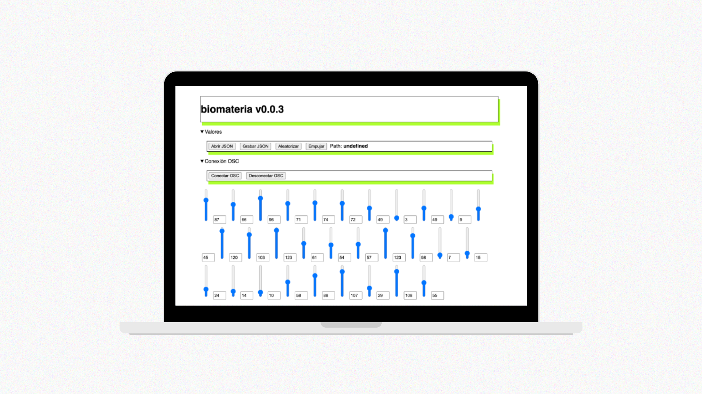
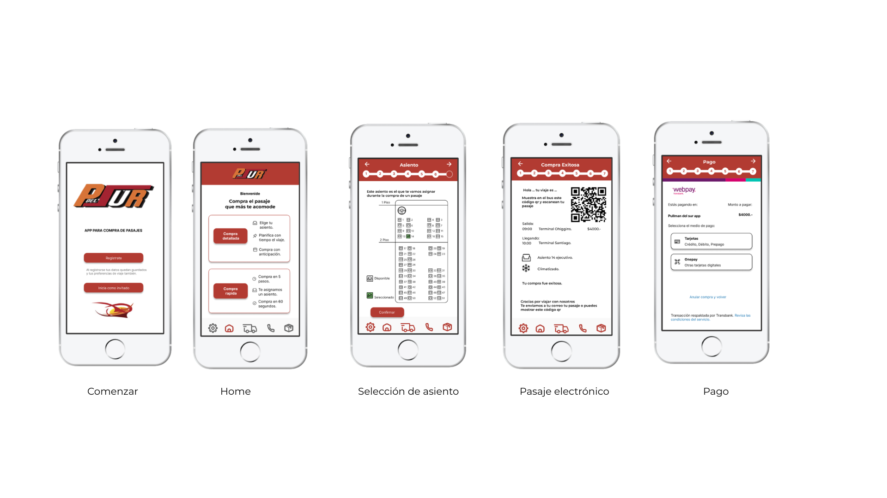

UX / UI Designer
Diseño que
conecta
Sofía Sandoval
Diseñadora industrial especializada en UX. Creo experiencias centradas en las personas — desde la investigación hasta el prototipo final.

Diseñadora industrial especializada en UX. Creo experiencias centradas en las personas — desde la investigación hasta el prototipo final.
Experiencias diseñadas con metodología centrada en el usuario, desde investigación hasta prototipo de alta fidelidad.

Plataforma que resignifica el duelo a través de ritos simbólicos y objetos de conmemoración.

App para fortalecer la vinculación de los residentes de La Granja con el Museo Interactivo Mirador.

Software para diseñadores que integra IA mediante protocolo OSC para crear biomateriales.

Rediseño de la app de compra de pasajes con foco en la experiencia de usuarios frecuentes.

App que incentiva el reciclaje de aceite de cocina mediante recompensas y recogida a domicilio.

Lámpara interactiva con Arduino que activa audios de seres queridos al detectar presencia.
Realización de landing pages — Consultora digital Kings
Asignatura Cuerpo, Movimiento y Código — Universidad Diego Portales.
Fundación Nuevos Tiempos · Centro Interactivo de los Conocimientos.
Certificación UX UI. Minor en Gestión de la Innovación, Universidad Diego Portales.
Minor en Gestión de la Innovación, UDP.
Proyectos financiados por Factoría UDP: template de portafolio y software de biomateriales con IA.
Titulada con distinción máxima. Top 10% de la generación.
Soy diseñadora industrial especializada en UX con más de dos años de experiencia en el desarrollo de apps y web. Me titulé con distinción máxima en UDP.
He trabajado en proyectos diversos como apps de duelo, software con IA, plataformas comunitarias y objetos interactivos con Arduino.
Estoy disponible para proyectos freelance, colaboraciones y oportunidades de trabajo.